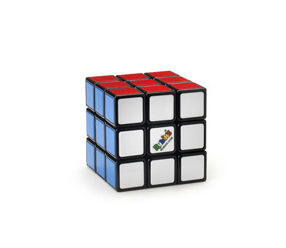

Vendo Cubo di Rubik

- Ottime condizioni
- Come nuovo
- Spedizione 5 euro
- Spedisce in tutta italia
- 3x3x3 Speed Cube è un cubo eccezionale con grandi prestazioni complessive.
- Fa un buon equilibrio tra accessibilità e prestazioni. Adatto a giocatori principianti e professionisti
- Cube di velocità, per aumentare l'intelligenza dei bambini, per liberare la pressione di lavoro degli adulti per aiutare a prevenire un calo della memoria degli anziani.
- Combina i disegni ad alte prestazioni con un buon valore. Il puzzle a 6 colori in plastica, realizzato con materiale originale e ecologico ABS, non tossico, affidabile e leggero e confortevole in mano, innocuo per l'uomo e l'ambiente.
- Grande taglio d'angolo, Tensione regolabile. Non torsione angolare come spesso e non bloccarsi. Difficile da pop, un buon controllo del cubo, viene pre-lubrificato e tensione. Definitivamente una buona scelta per migliorare il tuo record personale in concorsi.Questo cubo può essere utilizzato per competizioni internazionali.